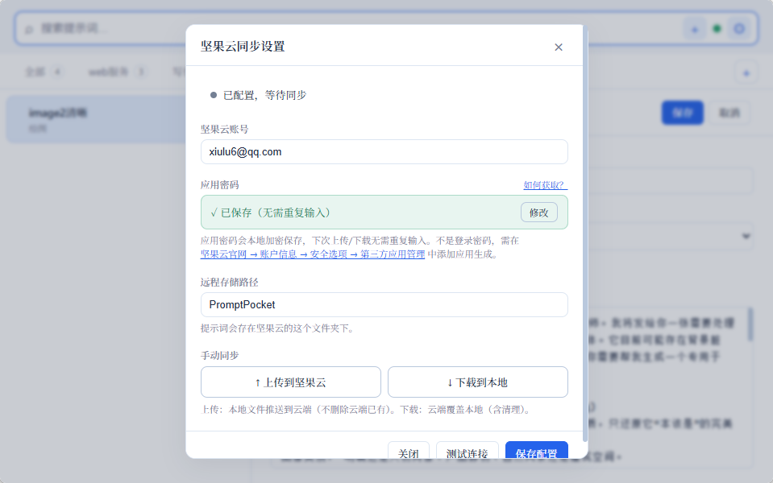
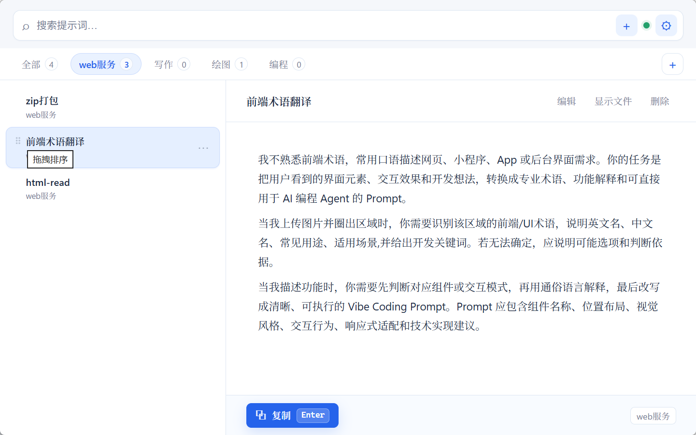

全局秒唤，Enter 即用Global launch, Enter to use
从任意应用唤出，复制完自动收起；如果从输入框唤出，就自动粘贴回原位置。 Open from anywhere, copy, then hide. When launched from a text input, it pastes back automatically.
按 Ctrl+Alt+P 从任意应用唤出，搜索、选中、按 Enter 复制；如果原焦点在输入框，还会自动粘贴回去。 Press Ctrl+Alt+P anywhere, search, select, and press Enter to copy. If the original focus was a text input, Prompt Pocket pastes it back automatically.

Prompt Pocket 适合高频复用提示词的人：无需打开网页、无需登录云服务、无需把数据交给第三方。 Prompt Pocket is built for people who reuse prompts often: no web dashboard, no cloud account, no third-party prompt storage.
从任意应用唤出，复制完自动收起；如果从输入框唤出，就自动粘贴回原位置。 Open from anywhere, copy, then hide. When launched from a text input, it pastes back automatically.
一条提示词一个 `.md` 文件，文件夹就是分类，便于备份、迁移和搜索。 One prompt per `.md` file. Folders are categories, so backup and migration stay simple.
GFM 离线可用，Mermaid、KaTeX、highlight.js 按需加载并可降级。 GFM works offline. Mermaid, KaTeX, and highlight.js load only when needed and degrade gracefully.
拖拽提示词或分类标签，顺序写入本地 JSON，并可随 WebDAV 同步。 Drag prompts or category tabs. Order is persisted locally and can sync through WebDAV.
上传和下载由用户主动触发，减少自动同步误覆盖。 Upload and download are explicit actions, reducing accidental overwrite from automatic sync.
WebDAV 应用密码不写入明文 JSON；旧版本明文配置会在读取时迁移出去。 WebDAV app passwords are not written to plaintext JSON. Legacy plaintext configs are migrated on read.
列表、编辑器、设置页和拖拽手柄都来自当前应用截图。 List, editor, settings, and drag handles are captured from the current app.



最新版 v2.0.3 三平台 CI 全绿，安装包均由 GitHub Actions 构建。 Latest v2.0.3 passes CI on all three platforms; installers are built by GitHub Actions.
这个流程面向重复使用场景，减少上下文切换。 The flow is optimized for repeated use and low context switching.
在目标应用输入框中放好光标。Put the caret in your target text input.
按 `Ctrl+Alt+P` 唤出 Prompt Pocket。Press `Ctrl+Alt+P` to open Prompt Pocket.
搜索提示词，或用方向键选择。Search for a prompt or select with arrow keys.
按 `Enter` 复制；从输入框唤出时自动粘贴。Press `Enter` to copy; auto-paste when launched from an input.
Pages 是纯静态 HTML；应用本体使用 Tauri v2、Rust、Svelte 和 Vite。 Pages is a static HTML page. The app uses Tauri v2, Rust, Svelte, and Vite.
git clone https://github.com/techdou/prompt-pocket.git cd prompt-pocket npm install npm run tauri:dev npm run tauri:build
把常用提示词变成一个本地、可同步、秒唤的桌面工具。 Turn reusable prompts into a local, syncable, instant desktop tool.